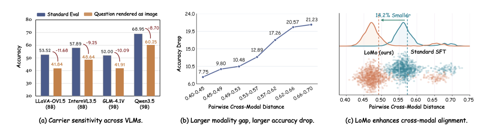
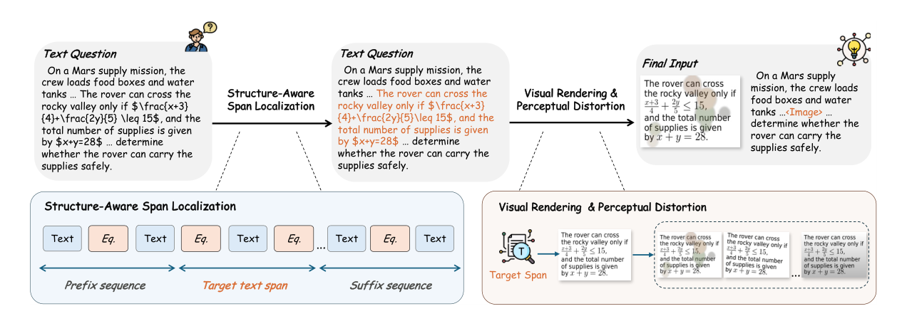
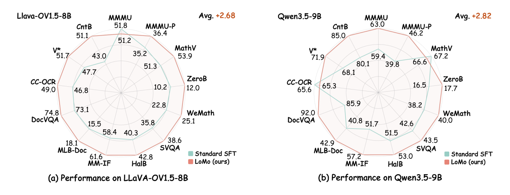
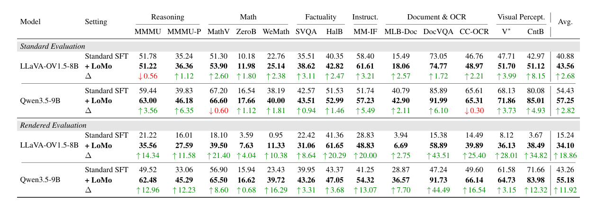
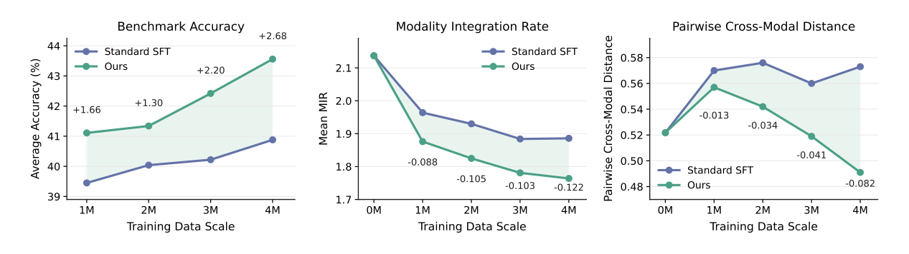
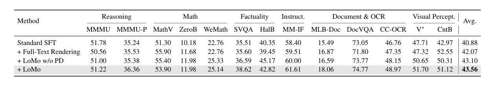
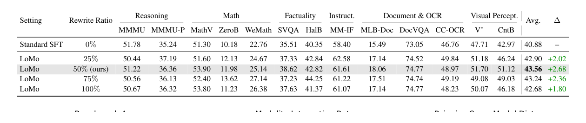
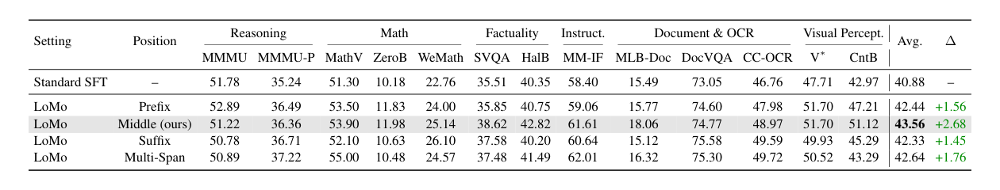
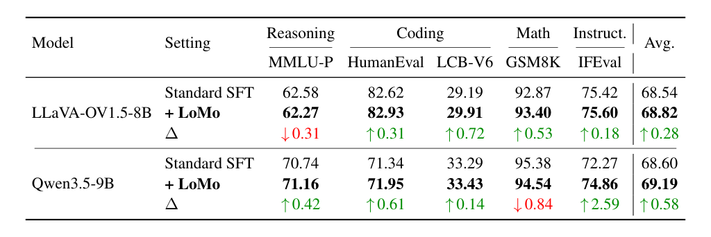

Current VLMs do not treat semantically equivalent text tokens and rendered text pixels as interchangeable. Rendering the same question as an image causes large accuracy drops, and larger cross-modal representation distances lead to stronger degradation.

(a) Rendering the same question as an image causes a clear accuracy drop across strong VLMs. (b) Samples with larger text-image representation distance suffer larger performance degradation. (c) LoMo shifts paired representations closer together, indicating stronger cross-carrier alignment.
LoMo converts a text-only instance into a text-image interleaved sequence. It localizes a coherent target span, renders the span as an image, applies semantics-preserving perceptual distortion, and substitutes the visual carrier back into the original position.

LoMo substitutes a local text span with a rendered visual carrier while preserving prefix and suffix context.
Across 13 multimodal benchmarks, LoMo consistently improves over Standard SFT on two backbones: +2.68 average accuracy on LLaVA-OneVision-1.5-8B and +2.82 on Qwen3.5-9B under standard evaluation.

Performance improves consistently across both tested VLM backbones and most benchmark categories.

LoMo improves standard evaluation and substantially narrows the gap under rendered-question evaluation.
LoMo improves average benchmark accuracy while reducing both Modality Integration Rate and pairwise cross-modal distance, indicating stronger alignment between text-as-tokens and text-as-pixels.

Accuracy rises with data scale while MIR and pairwise cross-modal distance decrease.
The reported ablations show that structure-aware span localization is the dominant contributor, perceptual distortion gives additional robustness, and a middle-span text-image-text structure is most effective.

Structure-aware localization contributes most of the gain, and perceptual distortion adds robustness.

A 50% rewrite ratio gives the best average score in the reported LLaVA-OneVision-1.5-8B setting.

Rendering the middle span forms a text-image-text structure and outperforms prefix, suffix, and multi-span alternatives.
LoMo preserves pure-text capability while improving multimodal performance, matching or slightly exceeding Standard SFT on five text-only benchmarks across the two tested backbones.

The multimodal gains do not come at the cost of pure-text capability.
@article{lomo2026,
title={LoMo: Local Modality Substitution for Deeper Vision-Language Fusion},
author={Anonymous Author(s)},
journal={Technical Report},
year={2026}
}